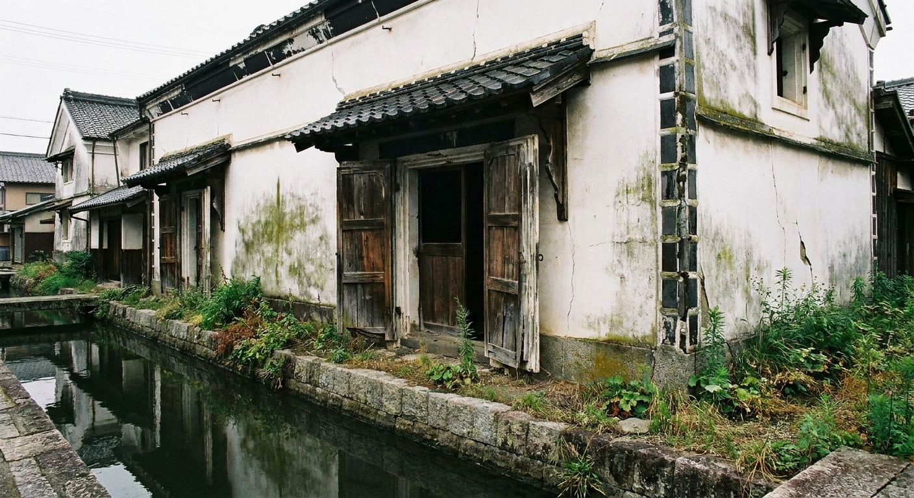
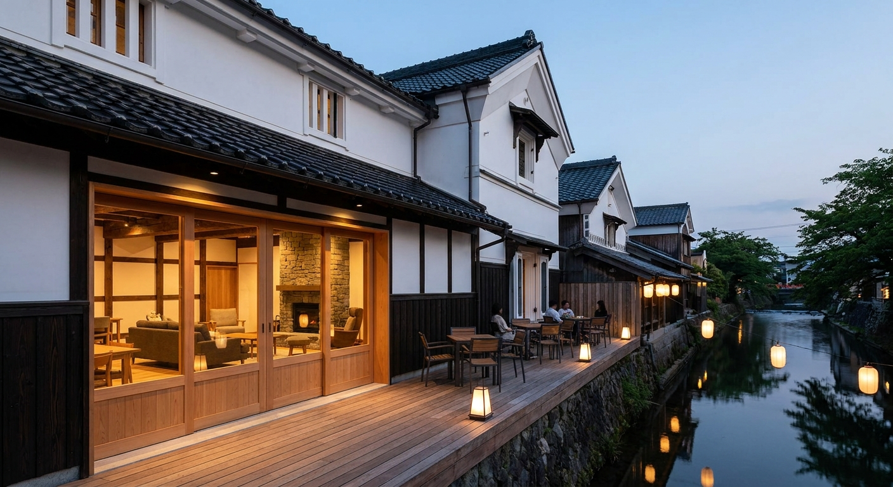
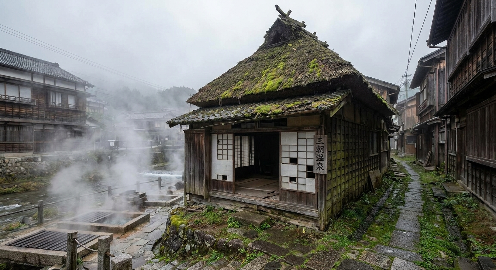
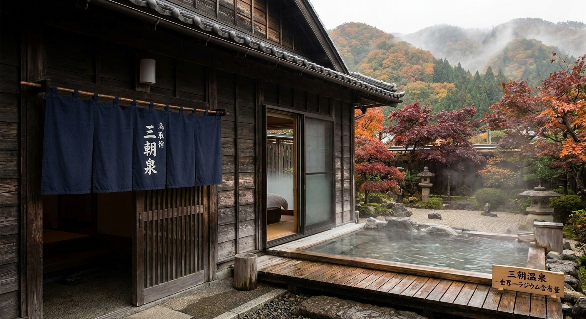
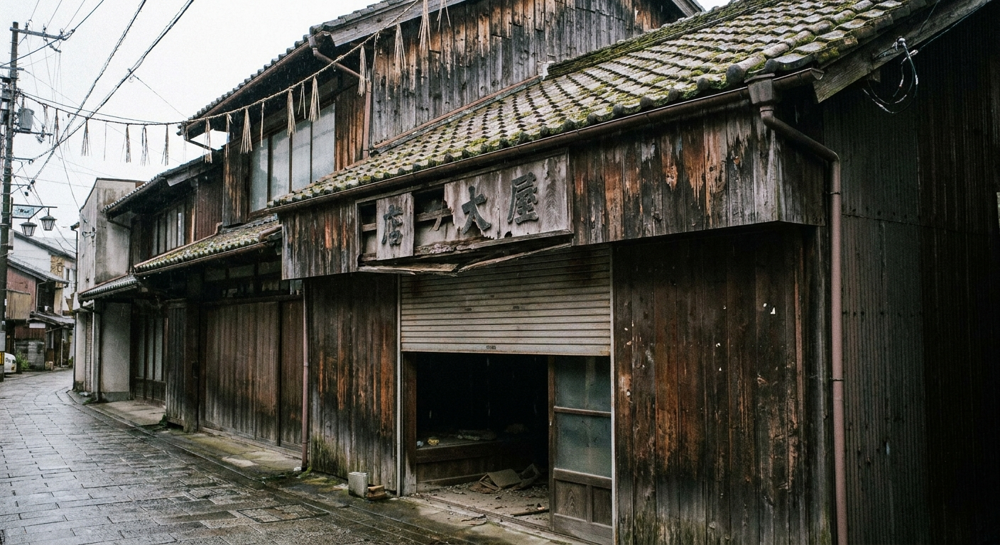
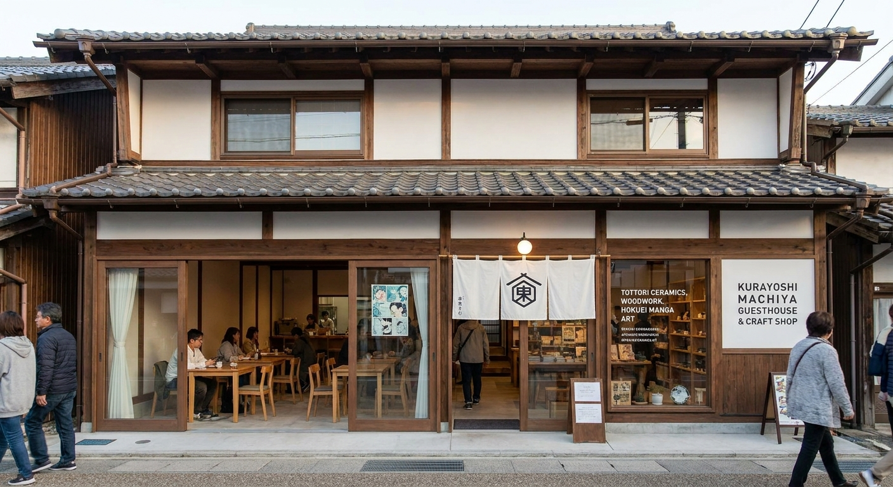
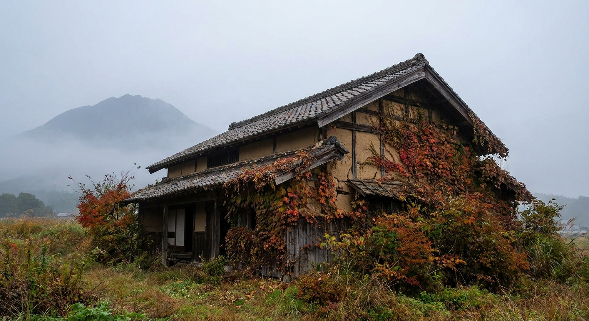
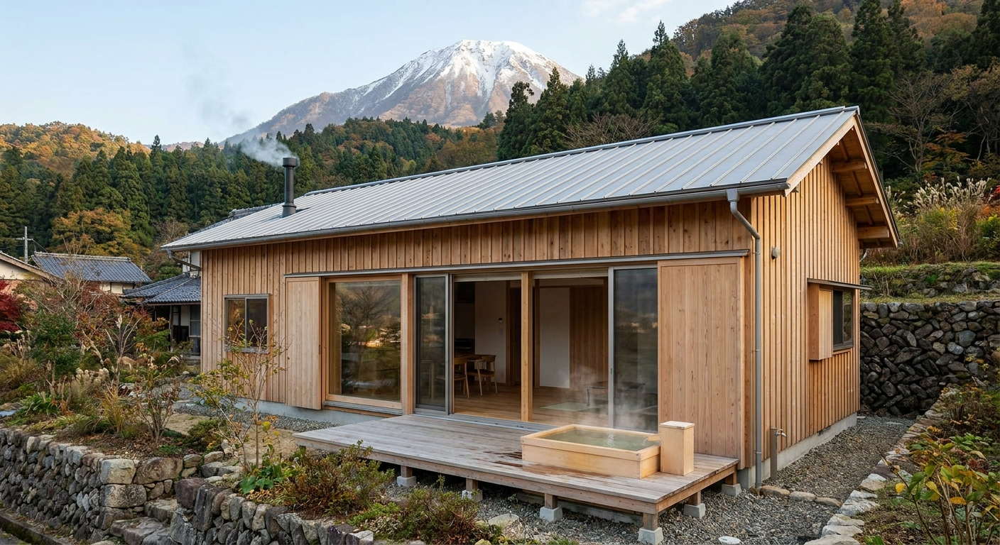

実際の物件 · 白壁土蔵
AI リノベーション後Score Overview · 全物件スコア
立地・単価ポテンシャル・初期投資効率・稼働率・差別化要素の5項目を各20点満点で評価。倉吉エリアは物件取得価格が全国最安水準で、回収期間の短さが際立つ。

現状写真
AI リノベ後イメージ
現状写真
AI リノベ後イメージ
現状写真
AI リノベ後イメージComparison · 全物件比較
| 物件 | スコア | 取得価格 | 総投資 | 年間純利益 | 回収期間 |
|---|---|---|---|---|---|
| 打吹玉川 土蔵リノベ 重伝建エリア · 土蔵2棟 |
82 | ¥350万 | ¥845〜1,095万 | ¥363万 | 5〜6年 |
| 三朝温泉 古民家 温泉街 · 世界最高ラドン泉 |
75 | ¥200万 | ¥795〜1,045万 | ¥306万 | 5〜7年 |
| 倉吉市街 土蔵付き町家 JR駅近 · コスパ最強 |
70 | ¥150万 | ¥590〜720万 | ¥255万 | 3〜4年 |
| 大山麓 農家古民家 ¥50万 · 農地付き · DIY向き |
63 | ¥50万 | ¥560〜810万 | ¥226万 | 8〜10年 |
※ Airbnb ホストサービス料15%（ホスト全負担型）・清掃費・修繕積立を控除後の純利益。収益計算式: 宿泊単価 × (1 - 0.15) × 稼働率 × 泊数。夏季92泊・稼働65%、春秋91泊・稼働55%、冬季182泊・稼働25%を採用。実際の収益は市場環境・運営体制により異なります。
Why Kurayoshi · なぜ倉吉か
倉吉・三朝エリアが今、空き家リノベ投資の穴場として注目される3つの理由。
Consultation · 無料相談
物件選定・リノベーション設計・Airbnb運用まで一気通貫でサポートします。白壁土蔵群での宿泊体験を一緒に作りましょう。まずは気軽にご相談を。
ありがとうございます。
24時間以内にご連絡します。